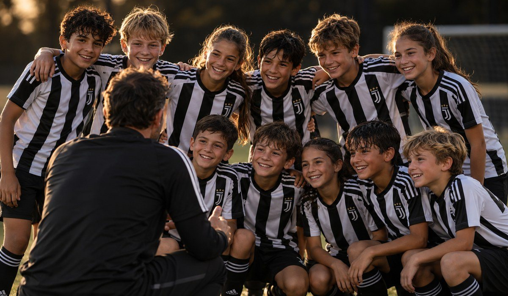

|
Hi Maria, More than 300 Dallas-area families have trained with Juventus. This is what they found. 01 Coaches from Italy Official Juventus Academy coaches lead every session with the Juventus methodology. 02 Groups by age Coaches correct each player up close, in groups by age. 03 Every level is welcome Boys and girls 6 to 16, players and goalkeepers. No club experience needed. 04 A door to more Standout players are noted for future Juventus Academy opportunities, like the Juventus Training Experience in Italy. 📅 Saturday and Sunday, November 21–22 · 9 AM–1 PM
📍 Soccer Spectrum, 1251 Digital Dr., Richardson, TX 75081
⚽ Boys and girls 6–16, players and goalkeepers |

|